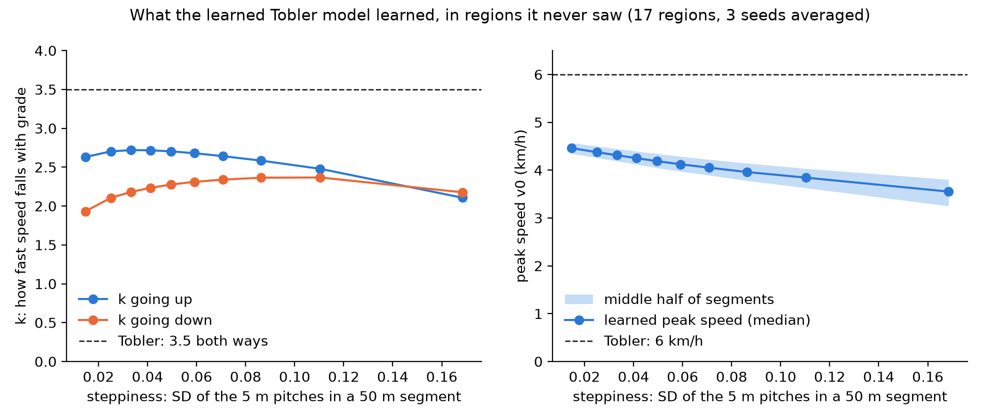
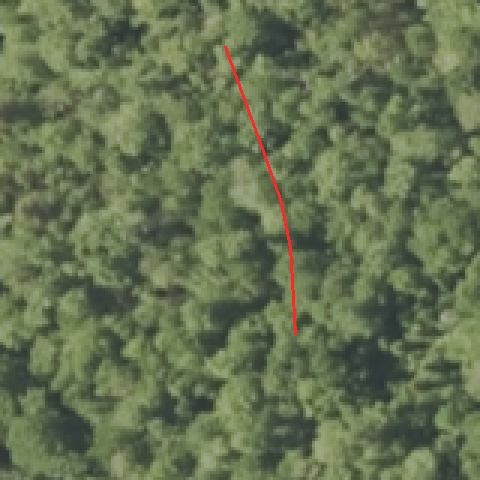
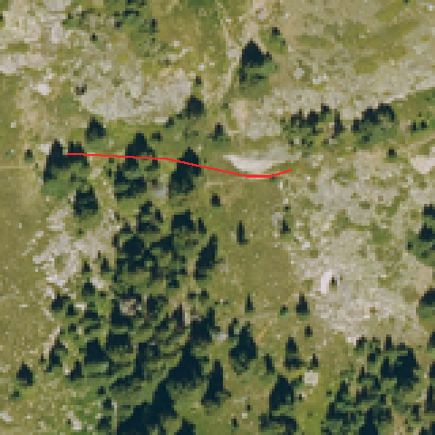

This week all five Gate 2 checks passed, I hand-checked the stop rule, and I tested aerial imagery. Neither ready-made imagery embeddings (Track A) nor photos centred on the trail (Track B) carried over to new regions; terrain still does.
| Gate 2 check | Result |
|---|---|
| Every learned model beats Tobler on held-out hikes | Yes: Tobler's fixed numbers are the worst model in every test |
| Trail tags beat slope alone | Yes: +1.3–1.5% on new hikes |
| Remote sensing compared with tags, gap measured | In unseen regions terrain adds 2.1–2.8%, tags 0.4–0.9%; terrain wins in 16 of 17 regions |
| Uncertainty is calibrated | The 90% ranges hold 89.4–89.9% of test segments |
| Our model beats boosted trees on the same inputs | A tie with the same spread rule; +0.55–0.66 points with its own spread |
The one caveat is check 5: learned Tobler's edge comes from its own uncertainty, which the trees did not have in this test.
Its constants change with the terrain in sensible ways. These are read in regions it never saw (17 regions, 3 seeds averaged):

The rule that built our dataset misses most short stops; a plain speed rule matches my hand labels better. I labeled 20 GPS moments from White Mountains hikes as stopped or moving (19 usable answers: 7 stops, 12 moving).
| Stop rule | Agrees with me | Stops caught | False stops |
|---|---|---|---|
| Dataset rule: 60 s ending < 10 m away | 8 of 19 | 1 of 7 | 5 |
| Speed rule: < 0.5 km/h | 13 of 19 | 6 of 7 | 5 |
| Either rule | 12 of 19 | 6 of 7 | 6 |
The dataset rule cannot see stops under a minute, and most of mine were 20–40 s. Switching to the speed rule barely moves the White Mountains curve: peak speed 4.23 → 4.13 km/h, k 2.10 → 2.15. My plan: keep the paper's numbers, state this check as a limitation, and use the speed rule in the data release.
Track A used Clay v1.5's ready-made embeddings: 1,024 numbers for every 155 m square of NAIP aerial photos, already computed. Each walking segment took the square under its midpoint. That covers 15 regions: Clay has Olympic only as 2017 photos at 1 m, and the North Shore is in Canada. In each test fold, PCA shrank the numbers to 16, fitted on that fold's training rows only, and they were added to the Gate 2 models.
By the rule I set before running it (a gain above zero in the new-region tests), Track A does not pass. It is the same pattern as the satellite embeddings: the model uses imagery to recognize places it has seen, not to learn trail features that carry over.
Track A's 155 m squares mostly show the landscape around a trail. Track B tests whether a closer look at the trail itself carries over to new regions, with the same tests and the same pass rule.
Result (6 Nov): Track B does not pass either. Photos of the trail itself also help only where the model has been. Skill in % over the slope-only curve, 16 regions, trees unless noted:
| Test | Terrain | Terrain + imagery | Gain [95% range] |
|---|---|---|---|
| New hikes | 3.20 | 4.21 | +1.01 [+0.57, +1.44] |
| New 10 km squares | 2.79 | 3.24 | +0.45 [+0.01, +0.85] |
| New hikers | 3.10 | 3.62 | +0.52 [−0.08, +1.09] |
| Unseen regions | 2.92 | 3.08 | +0.16 [−0.24, +0.57] |
| Unseen regions + hikers | 2.52 | 2.43 | −0.09 [−0.79, +0.46] |
| Unseen regions, learned Tobler | 3.50 | 3.50 | −0.01 [−0.52, +0.34] |
So neither landscape-scale nor trail-centred aerial imagery carries over to new regions, while terrain does.
What the model sees. Two of the 20 photos I checked by hand, with our matched trail in red: under forest the trail is hidden; in open terrain the path is visible.

